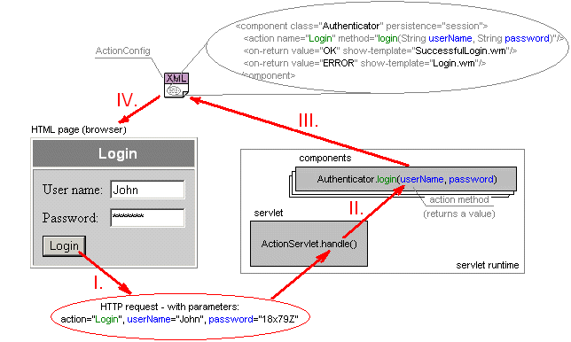

Why use ActionServlet?
1. Traditional methods
When you create a web-aware application, you always deal with two things: the code (application logic)
and the look&feel (HTML pages). Traditional approaches use two basic methods:
- Code that generates the HTML output - servlets (or CGI scripts etc.), for example:
public class SimpleServlet extends HttpServlet {
public void doGet (HttpServletRequest request, HttpServletResponse response)
throws ServletException, IOException {
PrintWriter out;
response.setContentType("text/html");
out = response.getWriter();
out.println("<HTML><BODY>");
out.println("<H1>This is output from servlet.</H1>");
out.println("</BODY></HTML>");
out.close();
}
}
- Code that is embedded in HTML - JSP (or ASP, PHP etc.), for example:
<HTML>
<jsp:useBean id="cart" scope="session" class="ShoppingCart"/>
<jsp:setProperty name="cart" property="*" />
<% cart.processRequest(request); %>
<br> You have the following items in your cart:
<OL>
<%
String[] items = cart.getItems();
for (int i=0; i<items.length; i++) {
%>
<li> <%= items[i] %>
<%
}
%>
</OL>
</HTML>
Both these approaches mix application logic with look&feel, which should be created as quite separate tasks!
2. Model-View-Controller (MVC)
Using a template engine like WebMacro is undoubtely an advance of
the programming model comparing - you can separate Model (data representation), View
(HTML template) and Controller (manages application flow).
In WebMacro MVC model, there is almost no code in the HTML templates - just the simple WebMacro script, which
can be easily understood by the web designer, and there is no HTML embedded in the program (servlet) code.
- Servlet code using WebMacro:
public class GuestBook extends WMServlet {
private Vector book = new Vector();
public Template handle(WebContext context) throws HandlerException {
if ("input".equals(context.getForm("action"))) {
// get the form variables
String name = (String) context.getForm("name"); // (1)
String email = (String) context.getForm("email");
// ...
context.put("registry", book); // (2)
return getTemplate("output.wm"); // (3)
}
}
}
- WebMacro HTML template:
<html>
#set $Response.ContentType = "text/html"
<TABLE>
#foreach $guest in $registry {
<TR>
<TD>$guest.Name</TD>
<TD>$guest.Email</TD>
</TR>
}
</TABLE>
</html>
The only "ugly" parts (in bold) are the necessities that retrieve parameters values from HTTP request (1),
set output $variables (2) and select templates to be displayed (3). "Ugly" means that the code above depends
on the template and vice versa. Simply, you cannot change parameters or template names without recompiling and
you cannot create reusable code easily.
3. One more level of indirection
ActionServlet removes the dependencies mentioned above - you can map HTTP requests to methods and pass HTTP
parameters values to them, map return values to template names and bind $variables (not on the picture)
independently - in the XML configuration file (called ActionConfig):

With ActionServlet, you can create reusable web components, that do not dependend on the templates and can deal
easily with session data, because components can be scoped to session/request/application (like with JSP).
For more advantages see Specification: Development using ActionServlet
|